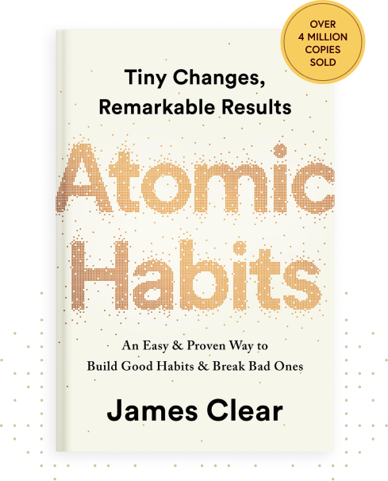
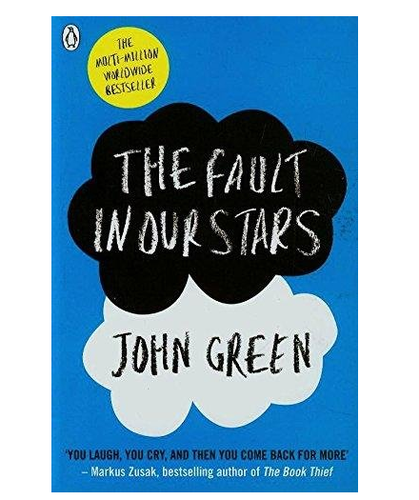

The Alchemist
Paulo Coelho
Book Review
Publishers Weekly: The story has the comic charm, dramatic tension and psychological intensity of a fairy tale, but it’s full of specific wisdom as well, about becoming self-empowered, overcoming depression, and believing in dreams. The cumulative effect is like hearing a wonderful bedtime story from an inspirational psychiatrist.
The Guardian: For anyone who reads not only to escape reality but also to understand reality, The Alchemist can offer the best of both worlds. The events of the novel sit just on the borderline of miraculous and the ambience is simply just not that of our humdrum teenage world. However, The Alchemist also supplies insight and inspiration that extends beyond Santiago’s Sahara and into all lives, whether young, old, or teenage. The Alchemist may not be your regular YA fiction book, but it most definitely still deserves a place on your bookshelf!

Atomic Habits
James Clear
Book Review
Laurie Marbas, MD, United States Air Force veteran : “As a physician attempting to help my patients build healthy habits to decrease and reverse chronic disease, Atomic Habits is the playbook I have been searching for. Not only does the book offer actionable items I can teach my patients, I can refer them to read and implement the ideas themselves. The format is powerful and simple. This should be taught in all medical schools.”
Medium.com: “Atomic Habits is a great book for anyone who is frustrated with the way they can’t seem to kick that one (or two dozen) bad habit(s) and wants to finally achieve health, fitness, financial freedom, great relationships, and a good life.”

The Fault in our Stars
John Green
Book Review
TIME: “One doesn’t like to throw around phrases like “instant classic” lightly, but I can see The Fault in Our Stars taking its place alongside Are You There God? It’s Me, Margaret in the young-adult canon. Green’s book is also a good example of why so many adult readers are turning to young-adult literature for the pleasures and consolations they used to get from conventional literary fiction.”
BOOKLIST, STARRED REVIEW: “In its every aspect, The Fault in Our Stars is a triumph.”